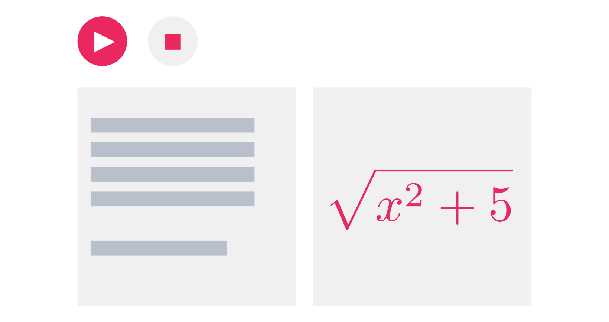

GSoC 2019
Project proposal by
Alexandra Cheng
INTRODUCTION
QUICK NOTE: This is a stand-alone individual project proposal for GSoC 2019. It complements, but does not depend upon, another individual proposal submitted by Oskar Garcia, with whom the idea for P5 Math in Motion was conceived.
In a nutshell we believe code can augment mathematics and make it more accessible.
Motion Symbols Library
As a stand-alone library the Motion Symbols Library, or MSL for short, would enable users to animate strings symbols inside p5.js, with a special focus on mathematical notation, which would be enabled with the help of Katex, an open-source JavaScript library that renders beautiful math notation on the web.
MSL would contain functions that animate transitions between math expressions or symbols—like variable substitutions—making it easy for users to animate math problems and build interactive tutorials inside p5.js.

MSL would also contain functions for customizing parameters such as position, keyframes, and triggers, thus providing a rich medium for communicating complex ideas more intuitively.

The above functionality would augment mathematical expressions with the expressive powers of motion, color, and modern digital screens.
As part of P5 Math in Motion MSL would also allow users to work with perfectly typed math notation, and code-like syntax highlighting.
COMMUNITY IMPACT
Educators could have an opportunity to integrate perfectly typed math notation inside their projects, and an opportunity to experiment with motion and interactivity inside their STEM curriculum. They could also reach a wider audience, since p5.js projects can be easily edited and shared amongst the community. Though perhaps the most interesting outcome would be to see what happens when we free educators from the confines of static text over a blackboard.
Learners would have an opportunity to experience math in a dynamic medium, while having the opportunity to play around with mathematics beyond pencil and paper.
Designers and artists would find it easier to add beautiful mathematical notation into their projects, and to export their expressions into different formats. They would also have access to beautiful symbols which are generally obscured in common text editors.
ABOUT ALEXANDRA
Math should jump into a fully digital medium, and p5.js is a great option for starting that transition.
Alexandra Cheng is majoring in Computer Science and Mathematics at Barnard College, Columbia university.
This project proposal was inspired by a shared love for mathematics, and because Oskar and I dream of a day when we can easily play around with math symbols on digital screens. As an applicant I was looking for an opportunity to dive deep into JavaScript while contributing something meaningful to the OpenSource community.
Also, math + code = awesome.
TIMELINE
Pre-GSoC | APR 9 – MAY 6 | Touch base with my GSoC mentor, and explore JS animation libraries. I also want to get better acquainted with JS, P5, and Katex as much as possible during this warm-up time
Community Bonding | MAY 9 - MAY 27 | Run design sprints based on our mentor's feedback, in order to produce prototypes that would eventually turn into library components. I also want to interview members of the community to pinpoint their needs and gather their feedback, followed by a round of user testing with our prototypes. This would conclude with a final list of components for production.
Coding | MAY 27 - AUG 19 | Work on production while getting some early feedback from users, while adjusting the code as we move along the project's goals.
Submission and Final Evaluation | AUG 19 - AUG 26 | Submit our code to the repository, and finish off with the final evaluation.
Go out and celebrate. Pizza is mandatory.